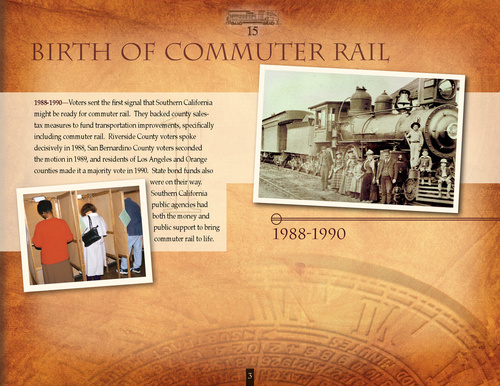

|

BIRTH OF COMMUTER RAIL
1988-1990—Voters sent the first signal that Southern California might be ready for commuter rail. They backed county salestax measures to fund transportation improvements, specifically including commuter rail. Riverside County voters spoke decisively in 1988, San Bernardino County voters seconded the motion in 1989, and residents of Los Angeles and Orange counties made it a majority vote in 1990. State bond funds also were on their way. Southern California public agencies had both the money and public support to bring commuter rail to life.
1988-1990
3
|